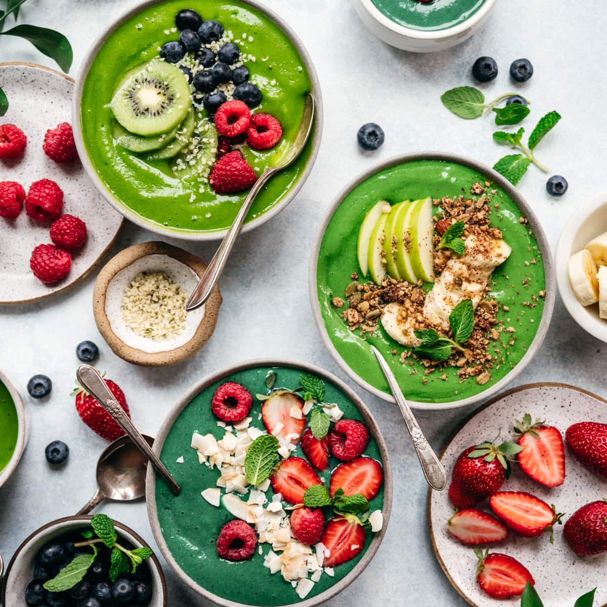
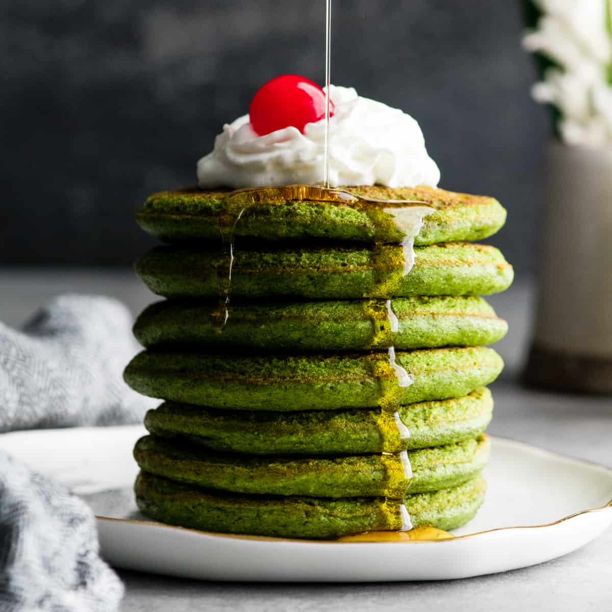
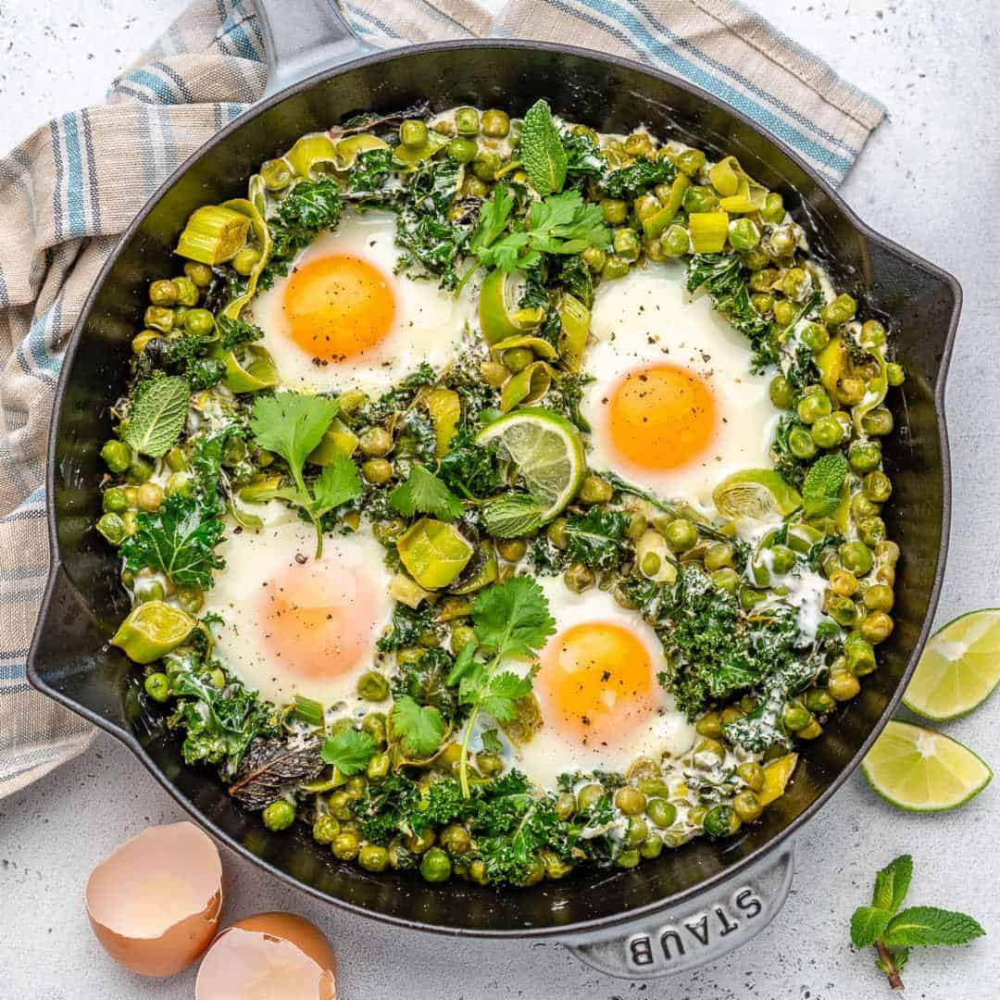

"The Most Important Meal of the Day"
Breakfast is often called ‘the most important meal of the day’, and for good reason. As the name suggests, breakfast breaks the overnight fasting period. It replenishes your supply of glucose to boost your energy levels and alertness, while also providing other essential nutrients required for good health.
Many studies have shown the health benefits of eating breakfast. It improves your energy levels and ability to concentrate in the short term, and can help with better weight management, reduced risk of type 2 diabetes and heart disease in the long term.
Despite the benefits of breakfast for your health and wellbeing, many people often skip it, for a variety of reasons. The good news is there are plenty of ways to make it easier to fit breakfast into your day.
People who eat breakfast generally have more healthy diets overall, have better eating habits and are less likely to be hungry for snacks during the day than people who skip breakfast. Children who eat an inadequate breakfast are more likely to make poor food choices not only for the rest of the day, but also over the longer term.
Favorite Breakfast Dishes
We’ve all heard that breakfast is the most important meal of the day! Waking up with a delicious morning meal can improve your energy levels and concentration. Here’s the countdown of America’s top 10 picks.
- Bacon: Did you guess correctly? Bacon is crowned America’s favorite breakfast food! It’s salty and savory flavor is what makes this breakfast side so addicting. You can add it to your favorite sandwich, wrap or just eat it on its own.
- Pancakes: Pancakes have always been a popular breakfast food. A short stack of buttermilk pancakes can be a sweet and filling treat to enjoy any time of day! Looking for something more? You can add your favorite ingredients for the desirable taste you crave. Some popular choices include chocolate chips, blueberries and walnuts!
- Chicken and Waffles: When you can’t decide between savory or sweet, choose chicken and waffles! If you’re looking for a meal to leave you feeling full and satisfied, this mouth-watering dish topped with butter and syrup can be the perfect choice.
- Avocado Toast: With new health food trends emerging in America all the time, avocado toast has found a place on this list. Not only is this a delicious breakfast choice, but it also contains a ton of nutrients and antioxidants your body needs to function.
- Home Fries: You can’t go wrong with adding potato to a meal. Home fries are a tasty side option, with their crispy outside and tender inside. This is another breakfast choice you can easily make at home or find at Colony Diner!
- Cereal: What’s better than exploring the cereal aisle at a grocery store? With a large variety of flavors, there’s a cereal option out there for everyone. Cereal is another quick and easy breakfast option, particularly when trying to get kids out the door in the morning – just add milk and enjoy!
- Breakfast Wrap: A breakfast wrap is a great option to combine all your favorite meats, cheeses and vegetables into one delicious tortilla. This is also an easy way to pack in protein and start your day off with a burst of energy.
- Breakfast Sandwich: A breakfast sandwich is a quick and easy meal to devour in the morning. Pile your choice of bread high with your favorite meats and cheeses or add some vegetables for additional flavor.
- French Toast: Don’t be confused by the name “French” Toast – Americans love it too! This sweet, flavorful breakfast meal is adored by breakfast lovers everywhere. Many people find it to be a comforting option, reminding them of their childhood and happy Sunday mornings.
- Sausage: Sausage is a popular breakfast option because of its smoky and spicy flavor profile. Order it as a side or incorporate it into your egg and cheese sandwich. Sausage is versatile, making it easy to add to any breakfast meal.
Filming Breakfast
I have always eaten a lot and it wasn't until peak corona-time when a friend suggested that I start filming and posting my breakfast videos on tiktok. Initially I was hesitant, since I'm a shy/private/reserved person and I didn't ever film myself, let alone have any social media platforms. Thankfully, by filming the huge breakfasts that I eat, I was able to have a lot of success over the past year and a half of tiktok and was able to make that a small but rewarding side hustle. My breakfast differs daily, as I roam around the kitchen and eat little bits of lots of various foods. People have come to recognize me as the 7 eggs or Chobani yogurt girl on tikok.
I usually eat a Chobani yogurt with lots of various seeds, nuts, and fruits, topped with honey. I also eat 7 eggs. My breakfast is very random and various, and includes chips, gummies, chocolate, ice cream, fruits, veggies, and much more. In my most viewed video of 5.7 million+ views, I ate 7 hard boilded eggs, a block of cheese, Caesar's salad, cherry tomatos, Chobani greek yogurt with 10 different tooppings, 1/2 an avocado, persimmon, 1/2 a plum, and a few pieces of steak. You can watch the video here.
Avocado toast with eggs and salt has become a popular breakfast dish.

Many enjoy their breakfast pasteries with nutrient dense nuts.

Waffles are also a favorite in the breakfast menu. They're usually prepared with syrup and butter.